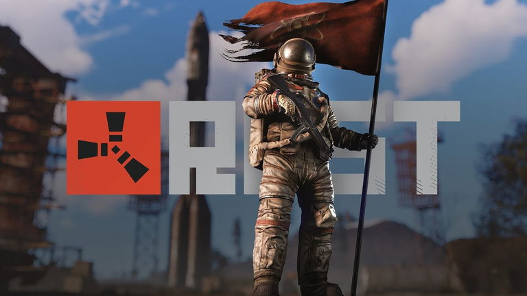
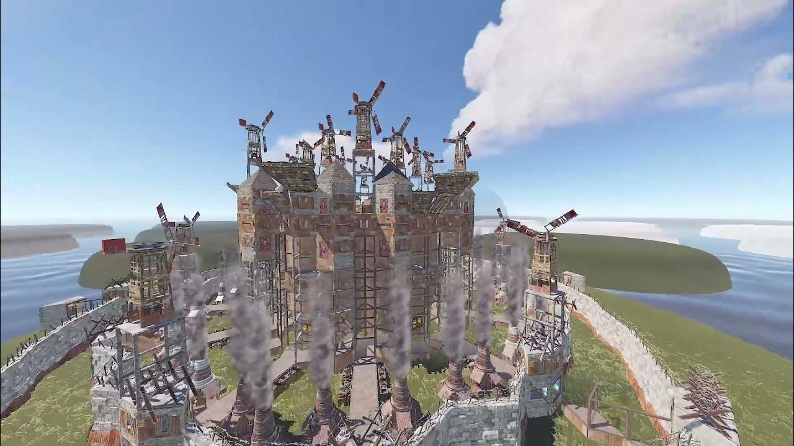
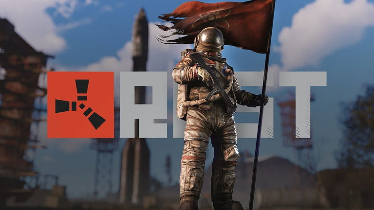
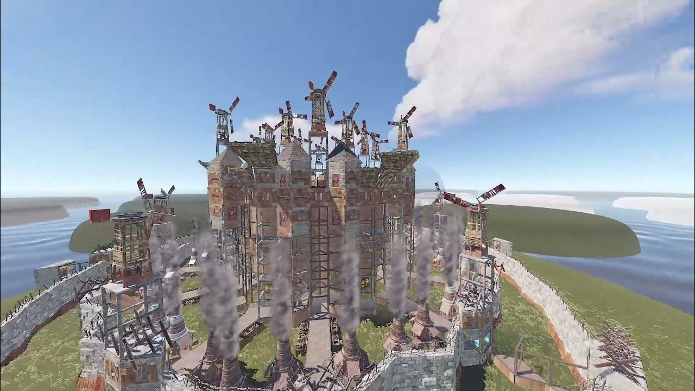

Présentation
Rust est un jeu vidéo de survie multijoueur en monde ouvert, développé par Facepunch Studios et sorti en accès anticipé en 2013.
C’est un jeu de survie impitoyable où votre principal objectif est de rester en vie face à un environnement hostile et d’autres joueurs.
Survie : Vous commencez le jeu sans aucun équipement, juste une pierre et une torche.
Votre premier défi est de gérer vos besoins de base : la faim, la soif, et la santé.
Il faut rapidement trouver de la nourriture, de l’eau, et des matériaux pour créer des vêtements et des outils.
Récolte et crafting : Rust repose fortement sur la récolte de ressources comme le bois, la pierre, et le métal.
Ces matériaux vous permettent de crafter (fabriquer) des objets essentiels : outils, armes, abris, et plus encore.
La progression dépend de votre capacité à accumuler des ressources et à fabriquer des équipements de plus en plus puissants.
Construction : L’un des aspects centraux de Rust est la construction de bases.
Vous devez construire des abris pour vous protéger des éléments, mais surtout des autres joueurs qui cherchent souvent à piller vos ressources.
Interactions avec les autres joueurs : Rust est un jeu multijoueur compétitif où les interactions avec les autres peuvent être imprévisibles.
Certains joueurs pourront former des alliances, tandis que d’autres tenteront de vous attaquer pour vous voler.
La communication et la diplomatie peuvent être utiles, mais méfiez-vous toujours des trahisons !
PvP (Joueur contre Joueur) : Rust est souvent très orienté vers le combat entre joueurs.
En plus de survivre face aux animaux sauvages et à l’environnement, vous devez aussi faire face aux autres joueurs armés.
Vous pouvez utiliser des armes fabriquées ou trouvées pour vous défendre ou attaquer.
Évolution : En progressant, vous passerez d’un simple survivant avec des outils rudimentaires à un joueur équipé d’armes à feu, de véhicules, et de bases renforcées.
L’objectif ultime est de dominer l’environnement et les autres joueurs, tout en protégeant vos ressources.
Réalisations
Voici Krolay,youtuber et streamer,il débute twitch en 2019 et se fait rapidement un nom grâce a son contenue autour de rust.
En 2022 il devient le streamer francophone numéro 1 sur le jeu.
Son style de jeu,allié à sa personnalité et sa connaissanse approfondie de rust,lui ont permis d'attirer une large communauté,
avec une moyenne de 800 a 1900 spectateurs par session.Il est aussi régulièrement impliqué dans des événements compétitifs,
comme le Twitch Rivals, où il s'est classé 5ème meilleur joueur de la compétition en 2023.
Ici nous avons Raven, Raven est un youtuber streamer principalement connu sur YouTube et pour ses vidéos sur rust.
Grâce à ses montages excellents, il partage des aventures captivantes où la stratégie, la survie et les affrontements entre clans sont au cœur de l'action.
Ce qui distingue Raven,c'est sa capacité à transformer chaque partie de Rust en un récit palpitant,mêlant humour et tension.
Grâce à son style de narration,ses conseils et astuces,cela fait de lui une référence pour les amateurs de Rust.
 



Evénement
Le twitch rivals est l'une des compétitions les plus attendues avec un cash price de 100000$ à la clé.
Il y a 6 équipes dont 1 pays par équipe, avec 2 capitaines choisis par Twich pour choisir les meilleurs joueurs pour remporter la compétition.

Elmamne joueur fraçais le plus complet de rust.
Au niveau, leader, PvP et stratégie, il domine largement avec son équipe à chaque wipe.
Il impose sa domination dans le jeu en équipe en combattant des teams de 10 joueurs ou plus.
Actualités
Mise à jour/patch:
rust.facepunch.com
Clip le plus vue de rust: Pokimane
Prochain Twitch Rivals:
Information